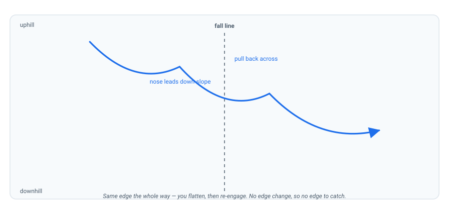

Garlands & the Falling Leaf
Here is the trick that makes your first real turns easy: get brilliant at turning without changing edges. Garlands and the falling leaf rehearse every part of a turn except the scary one — so when you finally change edges, only one new thing is happening.
The falling leaf: steering on one edge
You know the sideslip — straight down the fall line on one edge. The falling leaf adds direction: stay on that same edge, but shift your weight fore and aft so the board travels diagonally, first toward one side of the run, then back toward the other, like a leaf swaying down. Half the drill you are effectively riding "backwards" (nose pointing up-slope), which is exactly the skill you'll want later.
Crucially, you never change edges. Because the base never goes flat while you're sliding sideways, it's almost impossible to catch an edge — which makes it the safest place to learn how weight shift steers the board (Progresspedia).
The garland: half a turn, repeated
A garland takes the falling leaf and gives it the shape of a turn. You follow the arc of a turn, but instead of crossing to the other edge at the top of the arc, you flatten and re-engage the same edge — so you curve down-slope and then pull back, over and over. The track looks like a Christmas-tree garland (AASI Beginner's Guide, Part 3).

How to ride one, on the heel edge:
- Start in a heel-side sideslip.
- Flex your front knee and put a little more weight over the toes of your front foot — the front of the board leads down-slope and you begin to curve.
- Ease your weight back to centre; the board returns across the slope and slows.
- Repeat down the run. Then flip and do the same on the toe edge.
As it gets comfortable, let the board travel farther and farther down the slope before you pull back. That growing arc is the turn you're building.
A full turn is: initiate → control → complete → change edge. A garland is the first three, on repeat. You are rehearsing 90% of a turn while removing the single hardest 10% — then adding it back with momentum behind you.
For your trip
On the mountain, the falling leaf and garlands are also genuinely useful tools, not just drills: narrow exits, icy patches, and pitches that feel too steep all surrender to a controlled sideslip. They're tiring to use all day — treat them as tools, not a way to ride every run — but knowing them means no slope you meet will feel impossible.
- Heel-side falling leaf. Sideslip on your heel edge; shift weight forward to drift one way, back to drift the other. Sweep the full width of the slope twice.
- Toe-side falling leaf. Flip and repeat on the toe edge.
- Heel-side garland. From a heel-side sideslip, flex the front knee to curve down-slope, ease back to centre, repeat. Make each arc bigger than the last.
- Toe-side garland. Same on the toe edge. By the end, your arcs should be close to half-turns.
Check your understanding
1. The falling leaf never changes your…
Staying on one edge is the entire point: the base never goes flat while you slide sideways, so you can't catch an edge. It's the safest way to learn weight shift.
2. A garland rehearses a turn but skips the…
You ride the shape of the turn — initiate, control, complete — then flatten and re-engage the same edge instead of crossing over. That's the piece you add in Lesson 7.
3. The falling leaf is forgiving because the base never…
If the base never flattens while you travel sideways, the uphill edge can't dig in — which is what "catching an edge" is. That's why this drill is safe.
4. In a heel-side garland, which knee flexes to lead the board down?
Flexing the front knee loads the front of the board and lets it lead down-slope — the same "front leads" idea from pressure, and the same front-knee priority as knee steering.
Watch it, don't just read it
- How to Snowboard: A Beginner's Guide — Part 3 PSIA-AASI · shows sideslip → garland → C-turn as one continuous progression.
- Sideslip & Falling Leaf Progresspedia · written walkthrough of both edges, with the body positions spelled out.
- First Snowboard Lesson (series) SnowProfessor · a defined milestone progression if you want another voice checking the sequence.
Watch the AASI/PSIA Beginner's Guide to Snowboarding, Part 3 (YouTube) — Chris Rogers demonstrates the garland and then the C-turn it leads into. It's the exact bridge this lesson describes.
Your teacher is right here
If garlands feel pointless, or your board keeps wanting to slide straight instead of curving, tell me — there's usually one small pressure fix. And if you're already carving big garlands, say so; we might jump you ahead.
Snowboarding Fundamentals · lessons/0006-garlands-and-falling-leaf.html